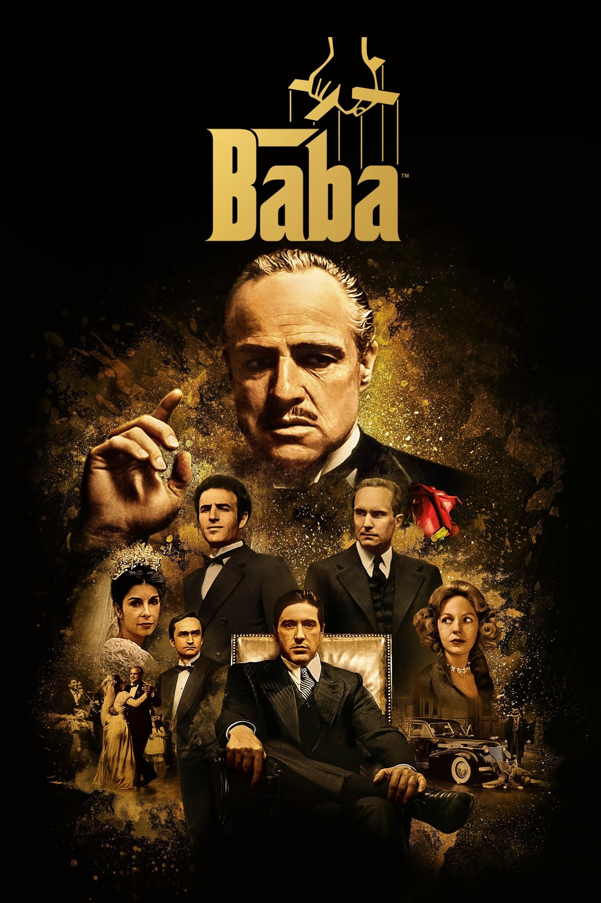

|  |
BABACorleone ailesi, Don Vito Corleone'nin başında olduğu, suça dayalı bir örgüt kurmuş olan İtalyan asıllı meşhur bir ailedir. Aile, New York'taki diğer dört aileyle birlikte New York'un yeraltı işlerini yönetmektedir. Ancak Corleone ailesini diğerlerinden ayıran özelliği, Don Corleone'nin cebinde bozuk para gibi taşıdığı politikacılar ve yargıçlardır. Politikacılar ve yargıçlarla olan bu yakın ilişkileri diğer ailelerin açamadığı kapıları açabilmesini sağlamaktadır. |